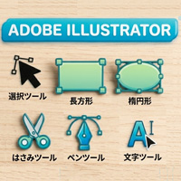

Illustrator初心者 爆速練習30個

- プロンプト例
Illustrator初心者が爆速で上達する練習（30個）
【STEP1】図形だけで作る（超基礎）
目的：Illustratorは図形で作ると理解する
- 四角形だけで家
- 信号機
- ノート
- スマホ
- テレビ
- フォルダ
- 本
- パソコン
- カメラ
- 電池
覚えるツール
- シェイプツール
- 塗り
- 線
- 整列
【STEP2】少し複雑なアイコン
目的：パス操作に慣れる
- 星
- ハート
- 吹き出し
- 雲
- 太陽
- 月
- コーヒーカップ
- マップピン
- 鍵
- 虫眼鏡
覚える機能
- パスファインダー
- アンカーポイント
- ダイレクト選択ツール
【STEP3】ペンツール練習
目的：Illustrator最大の難所
- 葉っぱ
- 炎
- 水滴
- 山
- 波
覚えるツール
- ペンツール
- 曲線
- アンカーポイント調整
【STEP4】デザイン練習
目的：実務に近い練習
- カフェロゴ
- バナー
- SNSアイコン
- カフェLPのイラスト
- アイコンセット（6個）
上達を加速させるコツ
①必ず「模写」をする
0から作るより
模写 → 自作
が圧倒的に上達します。
②1日2〜3個作る
- 30個は
- 約10日で終わります
③1個30分以内
- 時間制限を作ると上達します。
Illustrator初心者が最初に覚えるべきツール（重要）
優先順位
- 選択ツール
- ダイレクト選択ツール
- 図形ツール
- ペンツール
- パスファインダー
これだけで8割のデザインが作れます。